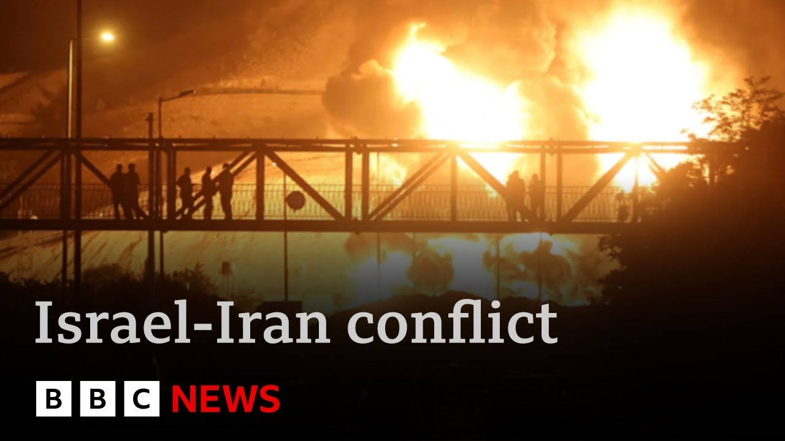

【战斗升级 - 美官员称特朗普否决刺杀伊朗最高领袖计划 | BBC新闻】
Summary: The conflict between Israel and Iran escalates as both sides exchange heavy attacks, targeting civilian areas and key facilities, with significant casualties reported and international involvement growing.
摘要： 以色列与伊朗冲突升级，双方激烈交火，袭击平民区和关键设施，造成重大伤亡，国际介入加深。

⏱️ Estimated Reading Time: 18 min
📚 六级生词 📚 雅思生词 📚 托福生词 📚 专八生词 📚 SAT生词 📚 考研生词 📚 GRE生词 📚 高考生词
Good evening from Tel Aviv.
晚上好，这里是特拉维夫。
Israel has sent dozens of surface-to-surface missiles at targets in Iran's West as the two arch enemies traded heavy blows for a third day.
以色列向伊朗西部目标发射数十枚地对地导弹，这两个宿敌已连续三天激烈交火。
The assault came as Israel's Prime Minister Benjamin Netanyahu said that Iran would pay a heavy price for civilian deaths and even speculated that the Iranian regime may fall.
袭击发生时，以色列总理内塔尼亚胡称伊朗将为平民死亡付出沉重代价，甚至推测伊朗政权可能垮台。
While Iran says more than a 100 people have been killed since the start of the fighting, Israel's attacks are focused on oil depots and facilities that are linked to Iran's nuclear program in Tehran.
伊朗称冲突已致百余人死亡，而以色列的袭击集中在德黑兰与核计划相关的油库和设施。
Satellite pictures show a huge fire burning at the Shaan oil refinery.
卫星图像显示沙安炼油厂燃起大火。
In Israel, at least 10 people have been killed and many more have been injured.
以色列至少10人死亡，更多人受伤。
A missile has hit Hifer tonight and a number of other cities also came under attack.
今晚导弹袭击了海法，其他多座城市也遭攻击。
Well, Prime Minister Saky Star has sent RAF fighter jets to Cyprus today.
首相萨基·斯塔尔今日派遣皇家空军战机前往塞浦路斯。
And earlier, the Foreign Office advised against all travel to Israel.
早些时候，外交部建议避免所有前往以色列的旅行。
With the latest on the fighting, here's our Middle East correspondent, Lucy Williamson.
关于冲突的最新消息，请听中东记者露西·威廉姆森的报道。
This is a war Israel's leaders have long prepared for.
这是以色列领导人长期准备的战争。
Its citizens are catching up fast.
民众正迅速适应。
Again tonight, rescue teams were out after direct hits from Iranian missiles in Hifur and Kiryat Gam.
今晚，救援队再次出动，应对伊朗导弹对希富尔和基里亚特加姆的直接袭击。
The price of failure for Israel's air defenses already written on neighborhoods like Batyam.
以色列防空系统的失败代价已体现在巴特亚姆等社区。
A direct hit to this apartment block.
这栋公寓楼遭直接命中。
The blast so destructive that 20 buildings around it are due to be pulled down.
爆炸破坏力极强，周边20栋建筑将被拆除。
Rescue teams digging for residents trapped in the rubble pulled a seventh victim from the debris tonight.
救援队在瓦砾中搜寻被困居民，今晚挖出第七名遇难者。
They're still digging for people missing from this apartment block.
他们仍在搜寻这栋公寓楼的失踪者。
Injured residents climbing over the rubble, lining the streets outside.
受伤居民爬过瓦砾，在外面的街道上排队。
This is a different kind of attack to the ones Israel is used to.
这与以色列习惯的袭击类型不同。
Its prime minister wanted to attack Iran while it was weak, but it's still strong enough to inflict real damage.
总理本想趁伊朗虚弱时攻击，但伊朗仍有实力造成实际破坏。
Like just a huge boom and uh after that a lot of dust in the air like I was able to see next to me only half a meter next.
就像一声巨响，然后空气中满是灰尘，我只能看到半米内的东西。
There was smoke everywhere.
到处都是烟雾。
Catia said I couldn't breathe.
卡蒂亚说我无法呼吸。
The door just flew off its hinges.
门直接从铰链上飞脱。
My mother is 76.
我母亲76岁。
She was injured in the head and had stitches in both arms.
她头部受伤，双臂缝了针。
I'm trying not to cry.
我努力不哭出来。
3 days into this war, many Israelis think it's still worth the price.
战争进入第三天，许多以色列人仍认为代价值得。
In an interview on American television, Israel's prime minister was asked if regime change was part of the plan.
以色列总理接受美国电视采访时被问及政权更迭是否在计划中。
Could certainly be the result because the Iran regime is very weak.
很可能成为结果，因为伊朗政权非常虚弱。
I I think it's basically left with two things.
我认为它基本上只剩下两样东西。
It's its plans to have atomic bombs and ballistic missiles.
就是拥有原子弹和弹道导弹的计划。
That's basically what Iran has.
这基本是伊朗的全部。
They certainly don't have the people.
他们肯定没有人民支持。
80% of the people would throw these theological thugs out.
80%的人会赶走这些神学暴徒。
In Iran today, fresh panic as Israel carried out more strikes in Tehran.
今日伊朗再陷恐慌，以色列对德黑兰发动更多袭击。
Among the targets hit, the Justice Ministry.
被击中的目标包括司法部。
Iranian media say more than a 100 people have already been killed there since Friday.
伊朗媒体称自周五以来当地已有超百人死亡。
We didn't want this war, Iran's foreign minister said.
伊朗外长表示："我们不想发动这场战争。"
We were focused on diplomacy over our nuclear program, but this was forced on us and we'll defend ourselves.
我们专注于核计划外交，但这是强加给我们的，我们将自卫。
Last night, Israel said it attacked 80 targets in Iran, including this oil refinery north of Tehran.
昨晚以色列称袭击了伊朗80个目标，包括德黑兰北部的这座炼油厂。
It says it still has many more targets in mind.
以色列称还有更多目标在计划中。
US President Donald Trump wants this war to end in a nuclear deal with Iran.
美国总统特朗普希望这场战争以与伊朗达成核协议结束。
Mr. The Netanyahu's end goals are less clear.
内塔尼亚胡的最终目标不太明确。
Lucy Williamson, BBC News, Tel Aviv.
BBC新闻，露西·威廉姆森，特拉维夫报道。
Well, the Iranian government is activating emergency shelters with mosques, metro stations, and schools being prepared to protect civilians.
伊朗政府正启用紧急避难所，清真寺、地铁站和学校被准备用于保护平民。
The Iranian government limits access to the country for journalists, but the BBC's Persian service provides news to Iranian audiences in Farsi.
伊朗政府限制记者入境，但BBC波斯语频道向伊朗观众提供波斯语新闻。
Our colleague Siavash Ardalan from the BBC Persian Service has been looking at how people in Iran have been responding to these unprecedented attacks.
BBC波斯语频道的同事西亚瓦什·阿尔达兰一直在观察伊朗民众对这些史无前例袭击的反应。
Unprepared for the sudden outbreak of violence, this woman tries to avoid the devastating impact of an Israeli attack in Iran's capital.
面对突然爆发的暴力，这名妇女试图躲避以色列袭击在伊朗首都的毁灭性影响。
Social media allows Iranians to record their experiences and their trauma.
社交媒体让伊朗人记录他们的经历和创伤。
Authorities are asking people not to film the attacks or the aftermath.
当局要求人们不要拍摄袭击或后果。
Many are doing the opposite for moments of impact while caught in traffic to cheers for the anti-aircraft personnel.
许多人反其道而行，记录袭击瞬间，甚至为防空人员欢呼。
Mashallah. Mashah.
真主保佑。
Iran's air defense, no match for Israel's Iron Dome, still manages to intercept drones that come without warning.
伊朗防空系统虽不及以色列铁穹，仍成功拦截了毫无预警的无人机。
I haven't slept for two nights now.
我已经两晚没睡了。
I'm feeling a lot of anxiety.
我感到非常焦虑。
All this reminds me of my childhood when we were in war with Iraq.
这一切让我想起童年与伊拉克的战争。
Back then, at least we had sirens and advanced warnings, but now nothing.
那时至少我们有警报和预警，但现在什么都没有。
Tonight I wish to speak to you, the proud people of Iran.
今晚我想对你们——骄傲的伊朗人民讲话。
Prime Minister Benjamin Netanyahu has called on Iranians to rise up and topple the clerical regime.
内塔尼亚胡总理呼吁伊朗人起义推翻神权政权。
And there is not a shortage of opposition figures in waiting, including Reza Pahlavi, the exiled crown prince from the 1979 revolution, closely aligned with Israel's administration, who sees an opportunity.
等待中的反对派人物不少，包括1979革命后流亡、与以色列政府关系密切的王储礼萨·巴列维，他认为机会已至。
The root cause of the problem has been the regime and its nature.
问题的根源在于政权及其本质。
And the only solution ultimately that will benefit both the Iranian people as well as the free world is for this regime to no longer be there.
最终对伊朗人民和自由世界都有利的唯一解决方案是这个政权不复存在。
I've been arguing this point from the very beginning that the ultimate solution is regime change.
我从一开始就主张最终解决方案是政权更迭。
Now we have an opportunity.
现在我们有机会。
Yet many Iranians critical of the regime do not see Israel as an ally.
然而许多批评政权的伊朗人并不视以色列为盟友。
I'm not a supporter of the Iranian government.
我不支持伊朗政府。
Not at all.
一点也不。
Really, I'm not.
真的，我不支持。
But in this situation, I feel a sense of unity among the people.
但在这种情况下，我感受到人民的团结。
We definitely won't back down against Israel.
我们绝不会对以色列退缩。
Whether friend or foe, Israel has woken Iranians up to the harsh reality of war.
无论敌友，以色列让伊朗人意识到战争的残酷现实。
But the future of the clerical establishment has never been so uncertain.
但神权体制的未来从未如此不确定。
For the Iranian people, things will get more difficult before and if they get easier.
对伊朗人民来说，情况在好转前（如果会好转）将更加艰难。
Siavash Ardalan, BBC News.
BBC新闻，西亚瓦什·阿尔达兰报道。
Well, this is a fast-moving story developing all the time.
这是一则快速发展的新闻。
Let's speak to my colleague Lucy Williamson about what is happening tonight.
让我们与同事露西·威廉姆森谈谈今晚的情况。
Lucy, what can you tell us?
露西，你能告诉我们什么？
What's the latest?
最新情况如何？
Well, every night here there have been several sirens, several warnings of missiles.
每晚这里都有多次警报，多次导弹预警。
The missiles keep coming and some of them do get through.
导弹不断来袭，有些确实突破了防御。
But Israel has now occupied Iranian airspace for almost 3 days, taking out a lot of its air defenses and targeting a long list of nuclear sites, military sites, ministries, energy facilities.
但以色列现已控制伊朗领空近三天，摧毁大量防空系统，并瞄准一系列核设施、军事地点、政府部门和能源设施。
Today, it said it had killed the head of the intelligence for the revolutionary guards, Muhammad Kazmi.
今日以色列称已击毙革命卫队情报负责人穆罕默德·卡兹米。
Here in Israel, the head of the armed forces said Israel would increase the intensity of its operation.
在以色列，武装部队负责人表示将加大行动强度。
And that raises several questions.
这引发几个问题。
Among them, whether the US will come and help Israel to target some of Iran's hard-to-reach nuclear sites, whether the UK and others may help to come and defend Israel from Iran, and also whether Israel's Prime Minister, Benjamin Netanyahu, has an exit plan for this war.
包括美国是否会帮助以色列打击伊朗一些难以触及的核设施，英国等国会否协助防御伊朗对以色列的袭击，以及内塔尼亚胡总理是否有战争退出计划。
Lucy, thank you.
露西，谢谢。
Well, as we heard earlier, the Prime Minister Saki Star said today that RAF fighter jets will be sent here to the Middle East to protect British interests in the region.
正如之前提到的，首相萨基·斯塔尔今日表示将派遣皇家空军战机前往中东保护英国在该地区的利益。
But what are they and where are they?
但它们是什么，在哪里？
Joining Wood explains.
请听伍德的解释。
Now, it may not technically be in the Middle East, but RAF Akrotiri in Cyprus is the UK's most strategically important base in the region, and it's being reinforced.
严格来说它可能不在中东，但塞浦路斯的阿克罗蒂里皇家空军基地是英国在该地区最具战略意义的基地，现正得到增援。
Now the numbers haven't been made public but they will include Eurofighter Typhoons and Voyager refueling aircraft.
具体数量未公开，但将包括台风战斗机和航行者加油机。
Royal Air Force Akrotiri is a critical forward deployable base to the UK.
阿克罗蒂里皇家空军基地是英国关键的前沿部署基地。
It's about 330 km from Akrotiri through to Tel Aviv.
从阿克罗蒂里到特拉维夫约330公里。
So flight time not long at all.
飞行时间很短。
It allows the UK to project power and influence within the region.
它使英国能在该地区投射力量和影响力。
But it's not the only UK presence in the Middle East.
但这并非英国在中东的唯一存在。
As well as the RAF base in Akrotiri.
除阿克罗蒂里的皇家空军基地外。
There are also two army battalions at another base in Cyprus.
塞浦路斯另一基地还有两个陆军营。
The UK also has a naval base in Bahrain with four mine clearance vessels and a Type 23 frigate.
英国在巴林还有海军基地，配备四艘扫雷舰和一艘23型护卫舰。
Also, the HMS Prince of Wales carrier group has just passed through the region and is still nearby.
此外，威尔士亲王号航母编队刚经过该地区且仍在附近。
Also, there are special forces, although their locations are a secret.
还有特种部队，但位置保密。
Now, the prime minister insisted the reinforcements in Akrotiri were for contingency support, but the government's refused to say whether it might, as it did last year, help protect Israel from incoming Iranian attacks.
首相坚称阿克罗蒂里的增援是应急支持，但政府拒绝透露是否会像去年那样协助保护以色列免受伊朗袭击。
Now, Iran has said that if they do that, UK bases could well be a target and they would be vulnerable.
伊朗表示若英国这样做，其基地可能成为目标且易受攻击。
For the UK, there would be a considerable risk for its facilities that were within range of Iranian weapons.
对英国而言，其位于伊朗武器射程内的设施将面临重大风险。
As I mentioned, the UK doesn't really have much in the way of ballistic missile defense itself, but for now, the message coming from the UK government is for de-escalation.
如我所提，英国自身弹道导弹防御能力有限，但目前英国政府传递的信息是降级冲突。
They say that these reinforcements are to protect existing assets that could well be vulnerable in an increasingly unstable region.
他们称这些增援是为保护在日益不稳定地区可能易受攻击的现有资产。
Well, tonight, President Trump has called on the two sides to reach an agreement and even suggested that a peace deal may be within sight.
今晚特朗普总统呼吁双方达成协议，甚至暗示和平协议可能近在眼前。
It's also emerged tonight that he rejected a recent Israeli plan to try and kill Iran's supreme leader Ayatollah Ali Khamenei.
今晚还曝出他近期否决了以色列刺杀伊朗最高领袖哈梅内伊的计划。
That has come from three senior US officials who've been speaking to our US partner CBS News.
消息来自三位向CBS新闻透露的美国高级官员。
Donald Trump at the moment is on his way to Canada to take part in the meeting of G7 nations that's happening.
特朗普正前往加拿大参加七国集团会议。
And our North America editor Sarah Smith is there.
我们的北美编辑莎拉·史密斯在现场。
Sarah, what do we know about this assassination plan?
莎拉，关于刺杀计划我们知道什么？
Well, it is being reported that when this was put to Donald Trump, the idea of trying to kill the Ayatollah, he flatly vetoed it.
据报道当向特朗普提出刺杀最高领袖的想法时，他断然否决。
And senior administration official has described the thinking this way, saying, "Have the Iranians killed a single American yet?"
一位高级官员这样描述其考虑："伊朗人杀过一个美国人吗？"
No.
没有。
Well, until they do, we are not even talking about going after the political leadership.
那么在他们这样做之前，我们甚至不会讨论针对政治领导层。
So, that was very clear.
所以这非常明确。
I mean, America is involved in this conflict to an extent because they're helping to defend Israel.
美国在某种程度上卷入冲突，因为他们协助防御以色列。
They have been shooting down missiles that have been aimed at Israel.
他们击落了瞄准以色列的导弹。
But today, Donald Trump has been at pains to stress that America is definitely not involved in the attacks on Iran.
但今天特朗普极力强调美国绝对没有参与对伊朗的袭击。
Now, there are people in Tehran who frankly do not believe that.
德黑兰有人显然不相信这点。
And he had one very clear message though about trying to involve the United States, saying if we are attacked in any way, shape or form, the full might of the US armed forces will come down on you at levels never seen before.
但他关于试图让美国卷入发出明确警告：若我们以任何形式遭袭，美军将以空前力量回击。
So he is very eager to warn off Iran from trying to involve America in this conflict.
因此他迫切警告伊朗不要试图让美国卷入冲突。
And of course when all the G7 leaders come here in Canada, that's what they're going to want to talk about, deescalating this conflict, making sure it doesn't spread more widely through the region.
当然，当所有G7领导人来到加拿大时，他们将讨论缓和这场冲突，确保其不会在该地区进一步蔓延。
And Donald Trump does seem to be remarkably optimistic about the idea of getting a peace deal done.
唐纳德·特朗普似乎对达成和平协议的想法异常乐观。
He says it it it won't be difficult.
他表示这不会太难。
It would be fairly easy to resolve this conflict.
解决这场冲突会相当容易。
And he even seems confident that talks can go on that were happening between America and Iran about trying to stop Iran ever developing a nuclear weapon.
他甚至对美伊之间旨在阻止伊朗发展核武器的谈判能够继续充满信心。
They were called off today when Iran pulled out.
这些谈判因伊朗退出而在今天被取消。
But Donald Trump's view is that what's happening now, the conflict, actually might make a deal come quicker.
但唐纳德·特朗普认为，当前的冲突实际上可能加速协议的达成。
He says Sarah, thank you.
他说，莎拉，谢谢。
Well, it is at this time of night, it's after midnight now here in Israel, that people both here and in Iran start to brace themselves.
此刻正值深夜，以色列已过午夜，这里和伊朗的人们开始做好准备。
They've seen heavy attacks for the last three nights.
过去三晚他们遭遇了猛烈袭击。
There's no reason to believe that tonight is going to be any different, particularly when you hear that international diplomacy doesn't seem to be having any impact.
没有理由认为今晚会有所不同，尤其是当国际外交似乎毫无效果时。